How to Metadata
for Digital Libraries
bit.ly/1ZxoSga
How Computers See Metadata
- Code
- 100010010111010101010110000100111101010101010101
- Layers of Abstraction
- Uppercase "A":
- ASCII Binary: 01000001
- ASCII Hexidecimal: 41
- Unicode: U+0041
Decision 1: Use Software or Text?
Metadata in Software: Databases
Strengths:
- Data Entry Tools
- Often include structure, standards, and controls
- User may not need to understand underlying structure
- Easier to secure
- Fast
- Can do almost anything
Weaknesses:
- Depending on software can be a preservation risk
- Software may conflict with your needs over time
- Entry costs
Database Management System (DBMS)
A computer program for storing information
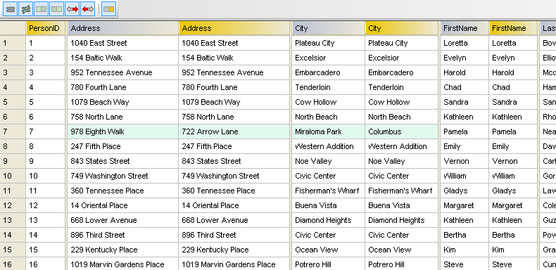Database Management System (DBMS)
A computer program for storing information
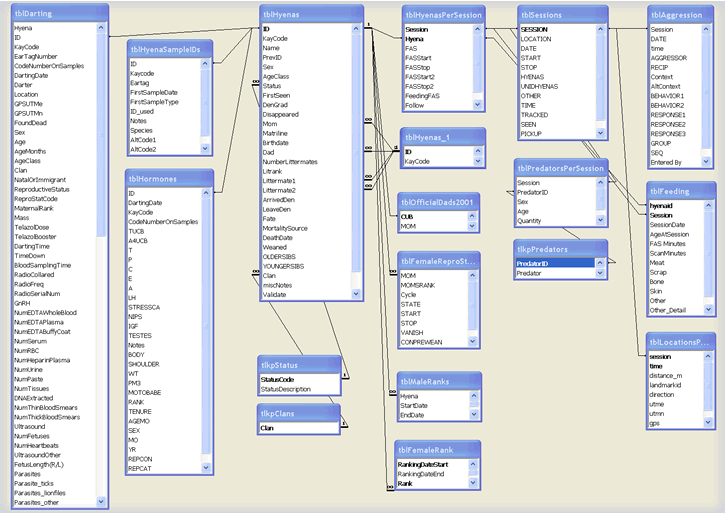Database Software
Proprietary:
- Oracle
- Microsoft SQL Server
- IBM DB2
Open Source:
- MySQL
- PostgreSQL
- SQLite
Standards:
- Relational concept
- SQL
NoSQL:
- Flexibility
- Big data
Incorporated within larger software applications
Metadata as Text: Serialization
XML, CSV, JSON, etc.
Strengths:
- Good for preservation
- Linking different software systems
- Can be Human-readable
Weaknesses:
- No built-in controls
- Generally slow
Serialization: Metadata Outside of Systems
Generally stored as text
- XML
- CSV, TSV
- JSON
Relies on character encoding standards
- Computer must understand: 0110101000001001001111001001010010101010100100000111110
XML
eXtensible Markup Language
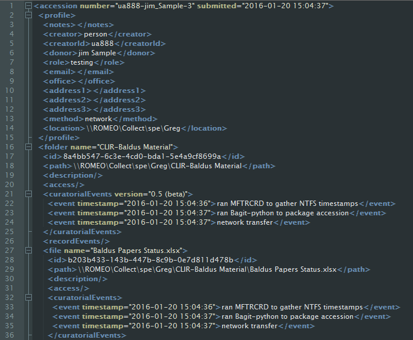CSV
Comma Separated Values
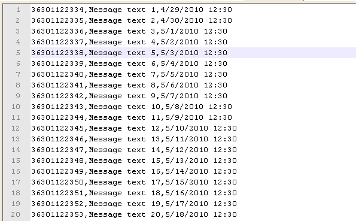 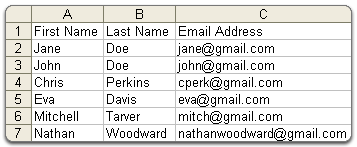JSON
JavaScript Object Notation
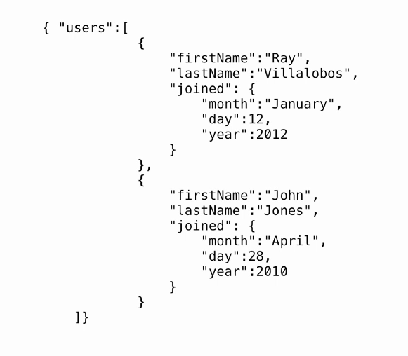Metadata as Text: Character Encoding
How computers read text
- ASCII (American Standard Code for Information Interchange)

ASCII

Unicode
- Can display any known character
- Not really an encoding, encoded "code points"
- UTF-8, UTF-16, UTF-32
False Choice
Software and Serializations play well together
Roles of Librarians and Archivists:
- Often work with data outside of systems
- Migration, mapping, clean-up
- Often work with metadata as text
Decision 2: What Tools to Use?
Hand Tools
Text editors:
- Notepad
- Text Edit
- Notepad++
- TextWrangler
- Sublime Text
- Integrated Development Environments (IDEs)
Spreadsheets:
- Microsoft Excel
- Google Sheets
- iWork Numbers
- LibreOffice Calc
Enables basic programming
Power Tools
Data-Specific Tools:
- XSLT for XML
- XQuery for XML
- SQL for databases
- SPARQL for RDF
Data Cleanup:
- OpenRefine
Programming Languages:
- Python
- Ruby
- JavaScript
- Bash scripting
- C#, Java, etc.
Version Control:
- Git
- GitHub
These are your best friends
Exercise 1: Create Metadata
Exercise 1: Create Metadata
Create metadata using the tool of your choice.
bit.ly/1o6QMBH
bit.ly/1Ztuub5
bit.ly/1RlymYC
Decision 3: Structure
Metadata Needs Structure
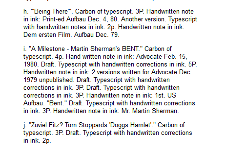- Enables computers to understand
- Necessary to do anything other than display
- Migrate to new systems or formats
Not This:
This:
Or This:
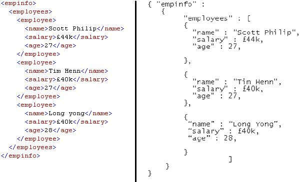Metadata Structures
Tables
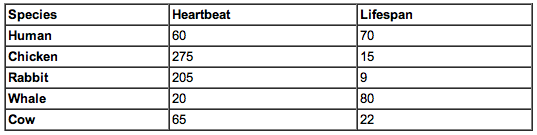Serializations:
- CSV, XML, JSON, etc.
Structure Standards:
- DublinCore, MODS
Trees (Hierarchical)
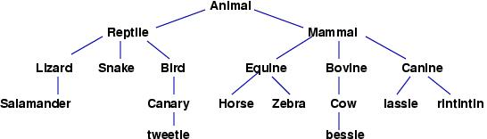Serializations:
- XML, JSON
Structure Standards:
- EAD, METS
Metadata Standards
- Often expressed as XML schemas
- Designed hierarchical or tabular
- Make data independent of software
- Promote interoperability, do not ensure it
- More sustainable than local solutions
- Encourage common understandings
Structure Standards
- DC (Dublin Core) - descriptive
- MODS (Metadata Object Description Schema) - descriptive
- METS (Metadata Encoding and Transmission Standard) - structural
- EAD (Encoded Archival Description) - descriptive
- PREMIS (Preservation Metadata: Implementation Strategies) - administrative
- XMP (Extensible Metadata Platform) - technical
Exercise 2: Metadata Map for Migration
Exercise 2: Metadata Map for Migration
Migrate your metadata from Simple Dublin Core to MODS.
bit.ly/1o6QMBH
bit.ly/1Ztuub5
bit.ly/1RlymYC
Content Standards
- DACS (Describing Archives, a Content Standard)
- AACR2 (Anglo-American Cataloging Rules)
- RDA (Resource Description and Access)
- CCO (Cataloging Cultural Objects)
Exercise 3: Use Content Standards
Exercise 3: Use Content Standards
Apply the "Using Dublin Core" content standard to your metadata.
bit.ly/1o8Ykny
Decision 4: Controls
Standards and Controls
Metadata Standards:
- Content Standards, Structure Standards
- DublinCore, METS, EAD, MODS, PREMIS etc.
- Guidelines, made to be broken
- "plural standards?"
Metadata Controls:
- Best Practices
- Validation
- Tools that give feedback
- Data Models
Metadata Controls
Force compliance with standards
Make sure complex systems do not break
- Database rules
- XML Schema validation
- XML rule-based validation (e.g. Schematron)
- Best practices
- Quality Assurance procedures
Names
University at Albany, SUNY
Controlled Vocabularies
Authorities
- Library of Congress Subject Headings (LCSH)
- Library of Congress Name Authority File (LCNAF)
- Getty Art & Architecture Thesaurus (AAT)
- Local Thesauri
Exercise 4: Reconcile Your Data
Exercise 4: Reconcile Your Data
Use appropriate authorities to reconcile your metadata
LC1: authorities.loc.gov
LC2: id.loc.gov
AAT: bit.ly/1L2vNqU
Data Types
- boolean: "true" or "false", "yes" or "no", "0" or "1"
- integer: "1", "63", "232234835482957205927059270597204"
- float: "43.5", "0.0", "1314.24242"
- string: "This is my string."
- Also strings: "4348928983671", "true"
Data Models

- Part of Systems Analysis and Design
- Basis for complex information systems
- Standardize how data elements relate to one another
- Three types:
- Conceptual
- Logical
- Physical
Portland Common Data Model (PCDM)

- Used as basis for Library Repository Software
- Project Hydra
Messy Metadata
Does not conform to structure standards
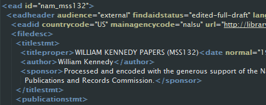Messy Metadata
Does not conform to content standard, inconsistencies in language and format
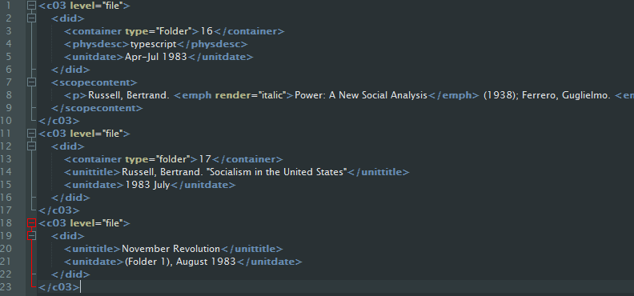Messy Metadata
Wrong character encoding
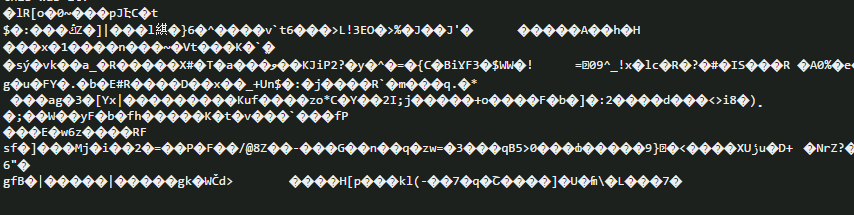Messy Metadata
Wrong character encoding
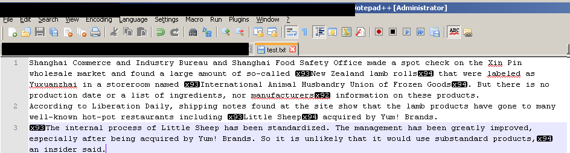Messy Metadata
Invalid serialization
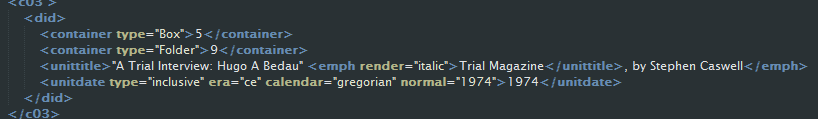Messy Metadata
Ensure clean metadata at creation
Quality Assurance practices:
- Training
- Documentation
- Sampling or other formal checks
Controls in addition to standards
- Tools that restrict metadata creation
We are humans, we break things
Exercise 5 Keep You Data Clean
Exercise 5: Keep You Data Clean
Develop some best practices and automated controls for your metadata.
Description: an Art
Ofness
- Objective description of what can be observed about an item.
- What is explicitly and inarguably shown?
- "A picture of an unidentified woman who is at a podium, making a gesture."
Aboutness
- Subjective information that an item may suggest or represent
- What does it mean? What is important about it?
Description: an Art
"A picture of an unidentified woman who is at a podium, making a gesture either of quieting a group of spectators or of leading them in song. The event is connected to the Vietnam Teach-In, a form of protest against U.S. involvement in Vietnam held in 1968."
Description: an Art
Layers, Location
- What is the central focus of the image?
- What is in the background?
- "Lowell Thomas and First World Fliers posing in front of plane."
Description: an Art
Exercise 6: Describing Different Formats
Exercise 6: Describing Different Formats
Images
Audio
How to Metadata
- Know your data's structure
- Know what you want to do to your data
- Use the tool that fits the task
- Think about long-term ends
- Think in computer logic
- Document: version control
- Steal ideas
- Make a safe zone
- Break things
Metadata and Professionalism
Metadata at
SCALE
- Metadata work is monotonous, minute...boring
- Let the computer do the work
Make Metadata Fast: Indexing
- Capture most relevent metadata
- No need to be human readable
- Quick and easy retrieval
Semanticism
Making metadata machine-actionable
- Triples
- Subject-Predicate-Object
Semanticism
Subject
- What is it?
- Website
- <Website Identifier from Authority>
Predicate
- What property does it have?
- Author
- <Author Identifier from Authority>
Object
- The Property is?
- Name of the author
- <Some Person>
Metadata in Practice
Schema.org
Metadata in Practice
Schema.org
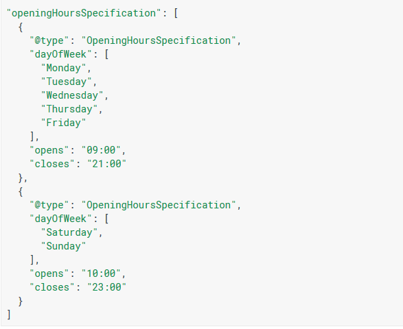